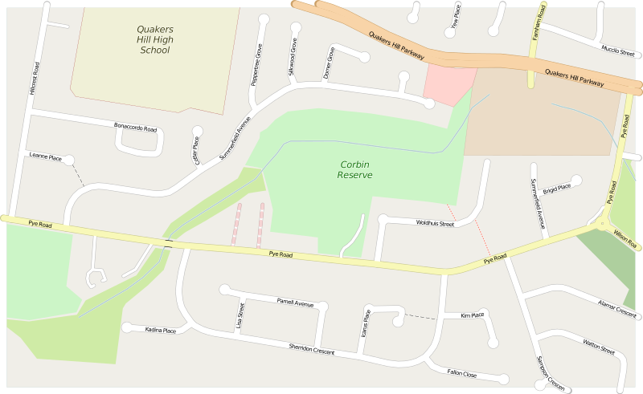
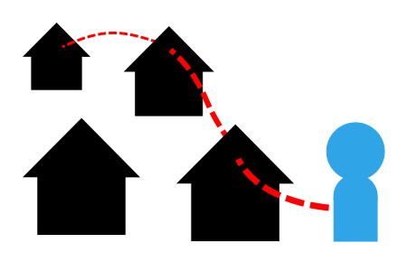
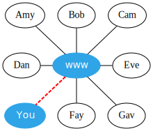
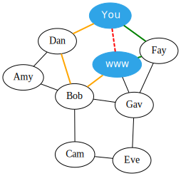

Introduction
CorbinMesh is a community run wireless mesh network that covers Corbin Reserve and surrounding area.
We’re still bringing devices online, testing nodes and links, experimenting and documenting, so excuse our mess while we get everything sorted. You can find our updates on the news page, or less frequently from our twitter account @corbinmesh. If you’re interested in participating, use our contact information to drop us a line.
- If you or your home is located near Corbin Reserve you might be able to connect
- If you would like to help our network grow, consider contributing to the mesh
- Please ensure you abide by our code of conduct
- I’ve read enough, just give me the quick start
Quick Start
Basically, if you can see a wireless network called ‘CorbinWireless’, just connect to it.
- SSID: CorbinWireless
- Password: none, open network
If would like more detailed information see the connect guides.
Please ensure you abide by our code of conduct.
Location
CorbinMesh covers Corbin Reserve and surrounding area. It’s located in Quakers Hill, a suburb of Sydney, Australia.
A small coverage area has been chosen for this mesh, our aim is not to extend ourselves to far too soon. Efforts in Sydney in the past have failed, in part due to being too ambitious and trying to cover very large areas. We aim to be immediately useful for people in our local area, such as using Corbin Reserve for sporting events and other recreational activities.
Corbin Reserve has been the home of the Quakers Hill Pirates since 1991, it’s open baseball fields and slight basin shape makes testing of line of sight links much easier.
If your house is located in this area below, you might be able to connect.

View a larger image of Corbin Reserve at Open Street Map.
Community
CorbinMesh is run for the community by members of the community. It is an attempt to take a grassroots approach to providing a viable alternative to commercial wireless networks for consumers.
CorbinMesh is a mesh network created by those who use and benefit from it rather than brought to consumers by business. Our common goals include non-commercial ownership of the network, minimal recurring cost, and self-supporting networks. It is not necessarily ‘free’ as in cost, but autonomous and self governing similar to the ideals of the Free Software, Open Source and Creative Commons movements.
Participants on the mesh network can provide [services] to other members. This is a great way to share content that is relevant to your community without having to pay for traffic or hosting on the internet.

Mesh
Normally networks are organised using a ‘hub and spoke’ model, where the network is organised around one central point with other devices connecting to it. All traffic goes through the central point. Such examples include mobile phones connecting to a central cell tower, or TVs receiving pictures from a large transmission tower.
In the ‘hub and spoke’ network example below, if an upstream issue causes your connection to the internet to become unavailable (shown in red) there’s not much you can do apart from relying on your ISP to restore your service. If your neighbours are willing to help you out you probably don’t have anything in place or even have discussed the possibility with them.

Mesh networks differ as they don’t have a central point, any node can connect to any other reachable node and the best connections are automatically chosen. Mesh networks are self-healing and can grow organically, the best connections to use at any time are constantly evaluated. If a better node is found it will be used; if a good node disappears, the next best one will then be used. Holes in the network are routed around automatically. As Mesh networks don’t have a central point, the network is built on consensus by participants.
In the ‘mesh’ network example below, if your direct connection to the internet becomes unavailable (shown in red), you could still reach the internet as traffic will automatically find another path around the unavailable connection. Traffic could pass through nodes Fay or even Dan then Bob to reach the internet. As this behaviour is built into the mesh, it makes doing this easy.

Software
Commotion is the primary software used for CorbinMesh. It was chosen due to it’s ease of setup and use. It’s a is a suite of open-source tools that use wireless devices to create decentralized mesh networks and share local services.
They have great documentation at the Commotion web site.
Code of conduct
CorbinMesh depends on the mutual cooperation of all members, please ensure you abide by our code of conduct.
Contact
You can contact us by emailing contact@corbinmesh.net or through our twitter account @corbinmesh. We’d also appreciate it if you could use the hashtag #corbinmesh when mentioning us or anything about CorbinMesh.
If you see some information that is incorrect, missing or out of date please let us know.